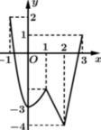
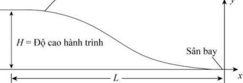
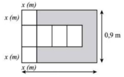
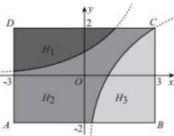

ĐỀ THI TOÁN - ĐỀ SỐ 60 HOT
Phần I: Trắc Nghiệm Nhiều Lựa Chọn
Tóm tắt kiến thức: Cực trị hàm số
Giá trị cực tiểu của hàm số được xác định từ bảng biến thiên, tại điểm mà đạo hàm đổi dấu từ âm sang dương.
Câu 1:
Cho hàm số \( y = f(x) \) có bảng biến thiên như hình vẽ dưới đây
| \( x \) | \( -\infty \) | -1 | 0 | 1 | \( +\infty \) |
|---|---|---|---|---|---|
| \( f'(x) \) | - | 0 | - | 0 | + |
| \( f(x) \) | 3 | 0 | 1 |
Chọn đáp án:
Lời giải:
Dựa vào bảng biến thiên, tại \( x = 0 \), \( f'(x) \) đổi dấu từ âm sang dương, nên \( f(x) \) đạt cực tiểu tại \( x = 0 \) với giá trị \( f(0) = 0 \).
Đáp án: D.
Tóm tắt kiến thức: Tính chất lũy thừa
Các tính chất lũy thừa: \( x^m \cdot x^n = x^{m+n} \), \( (x^m)^n = x^{m \cdot n} \), \( (xy)^n = x^n \cdot y^n \). Cần kiểm tra tính đúng sai của từng đẳng thức.
Câu 2:
Cho \( x, y \) là hai số thực dương và \( m, n \) là hai số thực tùy ý. Đẳng thức nào sau đây là sai?
Chọn đáp án:
Lời giải:
Kiểm tra từng đáp án:
A. \( x^m \cdot x^n = x^{m+n} \): Đúng (tính chất lũy thừa).
B. \( x^m \cdot y^n = (xy)^{m+n} \): Sai, vì \( x^m \cdot y^n \neq (xy)^{m+n} \) (trừ khi \( m = n \)).
C. \( (xy)^n = x^n \cdot y^n \): Đúng (tính chất lũy thừa).
D. \( (x^n)^m = x^{n \cdot m} \): Đúng (tính chất lũy thừa).
Đáp án: B.
Tóm tắt kiến thức: Giá trị lớn nhất và nhỏ nhất
Giá trị lớn nhất và nhỏ nhất của hàm số liên tục trên đoạn được xác định từ đồ thị hoặc các điểm cực trị.
Câu 3:
Cho hàm số \( y = f(x) \) liên tục trên đoạn \([-1; 3]\) và có đồ thị như hình vẽ bên. Gọi \( M, m \) lần lượt là giá trị lớn nhất và giá trị nhỏ nhất của hàm số trên đoạn \([-1; 3]\). Khi đó \( M + m \) bằng

Chọn đáp án:
Lời giải:
Dựa vào đồ thị, trên đoạn \([-1; 3]\), giá trị lớn nhất của hàm số là \( M = 2 \), giá trị nhỏ nhất là \( m = -4 \).
Vậy \( M + m = 2 + (-4) = -2 \).
Đáp án: B.
Tóm tắt kiến thức: Tích vô hướng
Tích vô hướng của hai vector \( \vec{a} = (a_1; a_2; a_3) \), \( \vec{b} = (b_1; b_2; b_3) \) là \( \vec{a} \cdot \vec{b} = a_1 b_1 + a_2 b_2 + a_3 b_3 \).
Câu 4:
Trong không gian \( Oxyz \), cho hai vector \( \vec{a} = (2; -1; 3) \), \( \vec{b} = (0; 3; 5) \). Tính \( \vec{a} \cdot \vec{b} \)
Chọn đáp án:
Lời giải:
Ta có: \( \vec{a} \cdot \vec{b} = 2 \cdot 0 + (-1) \cdot 3 + 3 \cdot 5 = 0 - 3 + 15 = 12 \).
Đáp án: A.
Tóm tắt kiến thức: Nguyên hàm
Nguyên hàm của \( x^n \) là \( \frac{x^{n+1}}{n+1} + C \), nguyên hàm của hằng số \( c \) là \( cx + C \).
Câu 5:
Họ nguyên hàm của hàm số \( y = x^2 - x \) là
Chọn đáp án:
Lời giải:
Ta có: \( \int (x^2 - x) \, dx = \int x^2 \, dx - \int x \, dx = \frac{x^3}{3} - \frac{x^2}{2} + C \).
Đáp án: A.
Tóm tắt kiến thức: Khoảng cách điểm đến mặt phẳng
Khoảng cách từ điểm \( M(x_0; y_0; z_0) \) đến mặt phẳng \( ax + by + cz + d = 0 \) là \( d = \frac{|ax_0 + by_0 + cz_0 + d|}{\sqrt{a^2 + b^2 + c^2}} \).
Câu 6:
Trong không gian với hệ tọa độ \( Oxyz \), khoảng cách từ điểm \( M(1; 0; 1) \) đến mặt phẳng \( (P): 2x - y + 2z - 3 = 0 \) bằng
Chọn đáp án:
Lời giải:
Khoảng cách từ điểm \( M(1; 0; 1) \) đến mặt phẳng \( (P): 2x - y + 2z - 3 = 0 \) là:
\( d(M, (P)) = \frac{|2 \cdot 1 - 0 + 2 \cdot 1 - 3|}{\sqrt{2^2 + (-1)^2 + 2^2}} = \frac{|2 + 2 - 3|}{\sqrt{4 + 1 + 4}} = \frac{1}{3} \).
Đáp án: D.
Tóm tắt kiến thức: Cấp số nhân
Công thức số hạng tổng quát của cấp số nhân: \( u_n = u_1 \cdot q^{n-1} \), trong đó \( q \) là công bội.
Câu 7:
Cho cấp số nhân \( (u_n) \) với \( u_1 = 2 \), \( u_8 = 256 \). Công bội của cấp số nhân đã cho bằng:
Chọn đáp án:
Lời giải:
Ta có: \( u_n = u_1 \cdot q^{n-1} \Rightarrow u_8 = u_1 \cdot q^7 \Rightarrow 256 = 2 \cdot q^7 \Rightarrow q^7 = 128 = 2^7 \Rightarrow q = 2 \).
Đáp án: C.
Tóm tắt kiến thức: Phương trình tham số đường thẳng
Phương trình tham số của đường thẳng đi qua hai điểm \( A(x_1; y_1; z_1) \), \( B(x_2; y_2; z_2) \) là: \( \frac{x - x_1}{x_2 - x_1} = \frac{y - y_1}{y_2 - y_1} = \frac{z - z_1}{z_2 - z_1} = t \).
Câu 8:
Trong không gian với hệ tọa độ \( Oxyz \), đường thẳng đi qua hai điểm \( A(3; 1; -6) \), \( B(5; 3; -2) \) có phương trình tham số là
Chọn đáp án:
Lời giải:
Vector chỉ phương của đường thẳng \( AB \): \( \vec{AB} = (5 - 3; 3 - 1; -2 - (-6)) = (2; 2; 4) = (1; 1; 2) \).
Phương trình tham số đi qua \( A(3; 1; -6) \) với vector chỉ phương \( (1; 1; 2) \) là:
\( \begin{cases} x = 3 + t \\ y = 1 + t \\ z = -6 + 2t \end{cases} \).
Đáp án: A.
Tóm tắt kiến thức: Phương trình logarit
Phương trình \( \log_a x = \log_a y \Rightarrow x = y \) (với điều kiện \( x, y > 0 \)).
Câu 9:
Số nghiệm của phương trình \( \log_2 x = \log_2 (x^2 - x) \) là
Chọn đáp án:
Lời giải:
Ta có: \( \log_2 x = \log_2 (x^2 - x) \).
Điều kiện: \( x > 0 \), \( x^2 - x > 0 \Rightarrow x > 1 \).
Phương trình tương đương: \( x = x^2 - x \Rightarrow x^2 - 2x = 0 \Rightarrow x(x - 2) = 0 \Rightarrow x = 0 \) (loại vì \( x > 1 \)) hoặc \( x = 2 \).
Vậy phương trình có 1 nghiệm: \( x = 2 \).
Đáp án: B.
Tóm tắt kiến thức: Hình học không gian
Trong hình chóp, nếu cạnh bên vuông góc với đáy, kiểm tra tính vuông góc của các đường thẳng và mặt phẳng.
Câu 10:
Cho hình chóp \( S.ABCD \) có đáy \( ABCD \) là hình thoi tâm \( O \). Cạnh bên \( SA \perp (ABCD) \). Khẳng định nào dưới đây sai?
Chọn đáp án:
Lời giải:
Tóm tắt kiến thức: Tích phân
Câu 11:
Tích phân \( \int_{-1}^{1} x^{2020} \, dx \) bằng
Chọn đáp án:
Lời giải:
Ta có: \( \int_{-1}^{1} x^{2020} \, dx = \left[ \frac{x^{2021}}{2021} \right]_{-1}^{1} = \frac{1^{2021}}{2021} - \frac{(-1)^{2021}}{2021} = \frac{1 - (-1)}{2021} = \frac{2}{2021} \).
Đáp án: B.
Tóm tắt kiến thức: Tứ phân vị
Tứ phân vị thứ nhất \( Q_1 \) và thứ ba \( Q_3 \) của mẫu số liệu ghép nhóm được tính dựa trên công thức nội suy.
Câu 12:
Khảo sát thời gian tập thể dục trong ngày của một số học sinh khối 11 thu được mẫu số liệu ghép nhóm sau:
| Thời gian (phút) | \([0; 20)\) | \([20; 40)\) | \([40; 60)\) | \([60; 80)\) | \([80; 100)\) |
|---|---|---|---|---|---|
| Số học sinh | 5 | 9 | 12 | 10 | 6 |
Chọn đáp án:
Lời giải:
Tổng số học sinh: \( N = 5 + 9 + 12 + 10 + 6 = 42 \).
Tứ phân vị thứ nhất \( Q_1 \): Vị trí \( \frac{N}{4} = \frac{42}{4} = 10.5 \), nằm trong nhóm \([20; 40)\).
\( Q_1 = 20 + \frac{\frac{42}{4} - 5}{9} \cdot (40 - 20) = 20 + \frac{10.5 - 5}{9} \cdot 20 = \frac{290}{9} \).
Tứ phân vị thứ ba \( Q_3 \): Vị trí \( \frac{3N}{4} = \frac{3 \cdot 42}{4} = 31.5 \), nằm trong nhóm \([60; 80)\).
\( Q_3 = 60 + \frac{\frac{3 \cdot 42}{4} - (5 + 9 + 12)}{10} \cdot (80 - 60) = 60 + \frac{31.5 - 26}{10} \cdot 20 = 71 \).
Vậy: \( 9Q_1 - Q_3 = 9 \cdot \frac{290}{9} - 71 = 290 - 71 = 219 \).
Đáp án: B.
Phần II: Trắc Nghiệm Đúng/Sai
Tóm tắt kiến thức: Góc giữa đường thẳng và mặt phẳng
Góc giữa đường thẳng và mặt phẳng được tính qua tích vô hướng của vector chỉ phương và vector pháp tuyến.
Câu 13:
Trong không gian với hệ tọa độ \( Oxyz \), cho mặt phẳng \( (P): 2x + y + 2z - 1 = 0 \) và đường thẳng \( d: \frac{x - 1}{1} = \frac{y + 2}{-2} = \frac{z - 2}{-2} \). Gọi \( \alpha \) là góc giữa đường thẳng \( d \) và mặt phẳng \( (P) \). Xét các phát biểu sau:
Chọn đáp án cho từng phát biểu:
a)
b)
c)
d)
Lời giải:
a) Sai. Vector pháp tuyến của mặt phẳng \( (P): 2x + y + 2z - 1 = 0 \) là \( (2; 1; 2) \), không phải \( (2; 2; 1) \).
b) Đúng. Vector chỉ phương của đường thẳng \( d: \frac{x - 1}{1} = \frac{y + 2}{-2} = \frac{z - 2}{-2} \) là \( (1; -2; -2) \).
c) Sai. Tích vô hướng: \( \vec{n}(2; 1; 2) \cdot \vec{u}(1; -2; -2) = 2 \cdot 1 + 1 \cdot (-2) + 2 \cdot (-2) = 2 - 2 - 4 = -4 \neq 4 \).
d) Sai. Góc \( \alpha \) giữa đường thẳng và mặt phẳng: \( \sin \alpha = \left| \cos (\vec{n}, \vec{u}) \right| = \frac{|\vec{n} \cdot \vec{u}|}{|\vec{n}| |\vec{u}|} = \frac{|2 \cdot 1 + 1 \cdot (-2) + 2 \cdot (-2)|}{\sqrt{2^2 + 1^2 + 2^2} \cdot \sqrt{1^2 + (-2)^2 + (-2)^2}} = \frac{|-4|}{\sqrt{9} \cdot \sqrt{9}} = \frac{4}{9} \). Vậy \( \alpha \approx 26^\circ \neq 64^\circ \).
Đáp án: a) Sai, b) Đúng, c) Sai, d) Sai.
Tóm tắt kiến thức: Phương trình vi phân
Phương trình vi phân \( T'(x) = -\frac{10}{x} \) có nghiệm \( T(x) = -10 \ln x + C \).
Câu 14:
Mặt cắt ngang của một ống dẫn nhiệt hình vành khuyên như hình vẽ. Bán kính ngoài là \( r \, \text{cm} \) và bán kính trong là \( 2 \, \text{cm} \) (\( r > 2 \)). Bên trong ống, nhiệt độ duy trì ở mức \( 100^\circ \text{C} \). Nhiệt độ \( T(^\circ \text{C}) \) tại điểm \( A \) trên thành ống là hàm số của khoảng cách \( x \, \text{cm} \) từ \( A \) đến tâm của mặt cắt và thỏa mãn \( T'(x) = -\frac{10}{x} \), với \( 2 \leq x \leq r \). Xét các phát biểu sau:

Chọn đáp án cho từng phát biểu:
a)
b)
c)
d)
Lời giải:
a) Đúng. \( T'(x) = -\frac{10}{x} \Rightarrow T(x) = \int -\frac{10}{x} \, dx = -10 \ln x + C \).
b) Sai. Tại \( x = 2 \), \( T(2) = 100 \Rightarrow -10 \ln 2 + C = 100 \Rightarrow C = 100 + 10 \ln 2 \). Vậy \( T(x) = -10 \ln x + 100 + 10 \ln 2 = 100 + 10 \ln \frac{2}{x} \), không phải \( 100 - 10 \ln \frac{2}{x} \).
c) Sai. Nhiệt độ tại \( r = 4 \): \( T(4) = 100 + 10 \ln \frac{2}{4} = 100 - 10 \ln 2 \approx 93.07^\circ \text{C} \), không phải \( 93.1^\circ \text{C} \).
d) Đúng. Để \( T(x) \leq 90 \): \( 100 + 10 \ln \frac{2}{x} \leq 90 \Rightarrow \ln \frac{2}{x} \leq -1 \Rightarrow x \geq 2e \approx 5.44 \). Làm tròn đến hàng phần mười: \( 5.5 \, \text{cm} \).
Đáp án: a) Đúng, b) Sai, c) Sai, d) Đúng.
Tóm tắt kiến thức: Xác suất mạch nối tiếp
Trong mạch nối tiếp, mạch ngừng hoạt động nếu ít nhất một bộ phận hỏng. Sử dụng công thức xác suất có điều kiện và xác suất toàn phần.
Câu 15:
Mạch điện gồm 2 bộ phận mắc nối tiếp, với xác suất làm việc tốt trong một khoảng thời gian nào đó của mỗi bộ phận là 0,95 và 0,98. Gọi \( A \): “Bộ phận thứ nhất hỏng”, \( B \): “Bộ phận thứ hai hỏng”, \( H \): “Mạch không hoạt động”. Xét các phát biểu sau:
Chọn đáp án cho từng phát biểu:
a)
b)
c)
d)
Lời giải:
Ta có: \( P(\overline{A}) = 0,95 \Rightarrow P(A) = 0,05 \), \( P(\overline{B}) = 0,98 \Rightarrow P(B) = 0,02 \).
a) Sai. \( P(AB) = P(A) \cdot P(B) = 0,05 \cdot 0,02 = 0,001 \neq 0,921 \).
b) Đúng. Vì mạch nối tiếp, nếu \( A \) hỏng thì \( H \) xảy ra: \( P(H|A) = \frac{P(H \cap A)}{P(A)} = \frac{P(A)}{P(A)} = 1 \). Tương tự, \( P(H|B) = 1 \). Vậy \( P(H|A) = P(H|B) \).
c) Sai. Xác suất mạch làm việc: \( P(\overline{A} \cap \overline{B}) = 0,95 \cdot 0,98 = 0,931 \). Xác suất mạch ngừng: \( P(H) = 1 - 0,931 = 0,069 \neq 0,068 \).
d) Đúng. Xác suất chỉ bộ phận thứ hai hỏng: \( P(\overline{A} \cap B | H) = \frac{P(\overline{A} \cap B)}{P(H)} = \frac{0,95 \cdot 0,02}{0,069} = \frac{19}{69} \).
Đáp án: a) Sai, b) Đúng, c) Sai, d) Đúng.
Tóm tắt kiến thức: Đạo hàm và tích phân
Hàm số bậc ba có hai điểm cực trị được xác định từ đạo hàm. Tính giá trị tại điểm cụ thể và hệ số góc tiếp tuyến.
Câu 16:
Một máy bay đang bay ở độ cao \( H \) khi bắt đầu hạ cánh xuống một đường băng sân bay cách máy bay một khoảng \( L \) theo phương ngang, như hình vẽ. Giả sử đường bay hạ cánh của máy bay là đồ thị của một hàm đa thức bậc ba \( y = ax^3 + bx^2 + cx + d \), trong đó \( M(-L; H) \) và \( O(0; 0) \) là hai điểm cực trị của đồ thị hàm số. Xét các phát biểu sau:

Chọn đáp án cho từng phát biểu:
a)
b)
c)
d)
Lời giải:
Vì \( M(-L; H) \) và \( O(0; 0) \) là hai điểm cực trị, nên \( y' = k x (x + L) \).
a) Sai. \( y' = k x^2 + k L x \), không phải \( x^2 + Lx \).
b) Sai. \( y = \int (k x^2 + k L x) \, dx = \frac{k}{3} x^3 + \frac{k L}{2} x^2 + d \). Tại \( (0; 0) \), \( d = 0 \). Tại \( (-L; H) \): \( \frac{k}{3} (-L)^3 + \frac{k L}{2} (-L)^2 = H \Rightarrow k = \frac{6H}{L^3} \). Vậy \( y = 2H \left( \frac{x}{L} \right)^3 + 3H \left( \frac{x}{L} \right)^2 \), không phải \( 4 \left( \frac{x}{L} \right)^3 + 6 \left( \frac{x}{L} \right)^2 \).
c) Đúng. Tại \( x = -\frac{L}{3} \): \( y\left(-\frac{L}{3}\right) = 2H \left(-\frac{1}{3}\right)^3 + 3H \left(-\frac{1}{3}\right)^2 = \frac{7H}{27} \).
d) Sai. Hệ số góc: \( y' = \frac{6H}{L^3} x^2 + \frac{6H}{L^2} x \). Tại \( x = -\frac{L}{3} \): \( y'\left(-\frac{L}{3}\right) = \frac{6H}{L^3} \cdot \frac{L^2}{9} - \frac{6H}{L^2} \cdot \frac{L}{3} = \frac{6H}{9L} - \frac{6H}{3L} = -\frac{4H}{3L} \neq -\frac{4}{3} H \).
Đáp án: a) Sai, b) Sai, c) Đúng, d) Sai.
Phần III: Trắc Nghiệm Trả Lời Ngắn
Tóm tắt kiến thức: Thể tích hình chóp
Thể tích hình chóp: \( V = \frac{1}{3} \cdot S_{\text{đáy}} \cdot h \). Sử dụng góc nhị diện và tam giác đều để tính.
Câu 17:
Cho hình chóp \( S.ABCD \) có đáy là hình thoi, \( AC = BC = 2 \), \( SAB \) là tam giác đều, số đo của góc nhị diện \( [S, CD, B] \) bằng \( 60^\circ \). Thể tích khối chóp \( S.ABCD \) bằng bao nhiêu? (làm tròn kết quả đến hàng phần mười).
Nhập đáp án:
Lời giải:
Gọi \( M \) là trung điểm của \( AB \). Ta có: \( AB \perp SM \), \( AB \perp CM \Rightarrow AB \perp (SCM) \Rightarrow CD \perp (SCM) \).
Góc nhị diện: \( [S, CD, B] = \angle SCM = 60^\circ \).
Vì \( AB = BC = 2 \), \( \triangle SAB \) đều, nên \( BM = \frac{AB}{2} = 1 \), \( SM = \frac{\sqrt{3}}{2} AB = \sqrt{3} \).
\( CM = \sqrt{BC^2 - BM^2} = \sqrt{2^2 - 1^2} = \sqrt{3} \).
\( \triangle SCM \): \( SCM = 60^\circ \), \( CM = SM = \sqrt{3} \Rightarrow \triangle SCM \) đều.
Diện tích \( S_{SCM} = \frac{\sqrt{3}}{4} \cdot SM^2 = \frac{\sqrt{3}}{4} \cdot 3 = \frac{3\sqrt{3}}{4} \).
Thể tích: \( V_{S.ABCD} = 4 \cdot V_{B.SCM} = 4 \cdot \frac{1}{3} \cdot BM \cdot S_{SCM} = 4 \cdot \frac{1}{3} \cdot 1 \cdot \frac{3\sqrt{3}}{4} = \sqrt{3} \approx 1,7 \).
Đáp án: 1,7.
Tóm tắt kiến thức: Xác suất tổ hợp
Xác suất để hai học sinh nhận quà giống nhau được tính bằng số trường hợp thuận lợi chia cho tổng số trường hợp.
Câu 18:
Một đoàn tình nguyện đến một trường tiểu học miền núi để trao tặng cho 100 em học sinh nghèo học giỏi. Đoàn tình nguyện có 70 chiếc áo mùa đông, 90 thùng sữa tươi và 40 chiếc cặp sách được đo và một cặp sách, hoặc một thùng sữa tươi và một cặp sách). Tất cả các suất quà đều có giá trị tương đương nhau. Trong số các em được nhận quà có hai em Việt và Nam. Gọi \( P \) là xác suất để hai em Việt và Nam nhận được suất quà giống nhau. Tính \( 11000P \).
Nhập đáp án:
Lời giải:
Gọi \( x \): số học sinh nhận áo và sữa, \( y \): số học sinh nhận áo và cặp, \( z \): số học sinh nhận sữa và cặp.
Ta có: \( \begin{cases} x + y = 70 \\ x + z = 90 \\ y + z = 40 \end{cases} \Rightarrow \begin{cases} x = 60 \\ y = 10 \\ z = 30 \end{cases} \).
Không gian mẫu: \( n(\Omega) = C_{100}^2 \).
Biến cố \( A \): Việt và Nam nhận quà giống nhau.
- Cả hai nhận áo và sữa: \( C_{60}^2 \).
- Cả hai nhận áo và cặp: \( C_{10}^2 \).
- Cả hai nhận sữa và cặp: \( C_{30}^2 \).
Số trường hợp: \( n(A) = C_{60}^2 + C_{10}^2 + C_{30}^2 = 2250 \).
Xác suất: \( P(A) = \frac{2250}{C_{100}^2} = \frac{5}{11} \Rightarrow 11000P = 11000 \cdot \frac{5}{11} = 5000 \).
Đáp án: 5000.
Tóm tắt kiến thức: Tối ưu hóa thể tích
Thể tích hình hộp được biểu diễn qua biến \( x \), tìm giá trị \( x \) cực đại bằng cách lấy đạo hàm.
Câu 19:
Từ một miếng bìa có độ dài hai cạnh lần lượt là \( 0,9 \, \text{m} \) và \( 1,5 \, \text{m} \) như hình bên dưới, bạn Duy cắt đi phần tô màu xám và gấp lại để được một hình hộp chữ nhật. Gọi \( V \) là thể tích hình hộp chữ nhật được tạo thành. Tìm \( x \, (\text{m}) \) để hình hộp tạo thành có thể tích lớn nhất.

Nhập đáp án:
Lời giải:
Hình hộp có kích thước: chiều dài \( 1,5 - 2x \), chiều rộng \( 0,9 - 2x \), chiều cao \( x \).
Thể tích: \( V(x) = x (1,5 - 2x)(0,9 - 2x) \), với \( 0 < x < 0,45 \).
Đặt \( f(x) = (1,5 - 2x)(0,9 - 2x) = 4x^2 - 4,8x + 1,35 \).
Vậy \( V(x) = x f(x) = 4x^3 - 4,8x^2 + 1,35x \).
Đạo hàm: \( V'(x) = 12x^2 - 9,6x + 1,35 = 0 \Rightarrow 4x^2 - 3,2x + 0,45 = 0 \Rightarrow x = 0,3 \) hoặc \( x = 0,5 \) (loại vì \( x < 0,45 \)).
Kiểm tra: \( V''(x) = 24x - 9,6 \), tại \( x = 0,3 \): \( V''(0,3) < 0 \), nên \( V \) đạt cực đại tại \( x = 0,3 \).
Đáp án: 0,3.
Tóm tắt kiến thức: Tích phân xác định
Diện tích được tính bằng tích phân xác định, số hộp sơn được tính bằng diện tích chia cho diện tích mỗi hộp sơn.
Câu 20:
Một bức tường hình chữ nhật \( ABCD \) có kích thước \( 6 \, \text{m} \times 4 \, \text{m} \), được bạn An trang trí bằng cách vẽ hai đồ thị \( f(x) = a^x \), \( g(x) = \log_b x \) (\( a, b \) là các số dương và khác 1) đối xứng nhau qua đường thẳng \( d: y = x \) và chia thành ba phần (tham khảo hình vẽ bên). Phần \( H_1 \) được sơn màu xanh da trời, phần \( H_2 \) được sơn màu vàng, phần \( H_3 \) được sơn màu xanh lá cây. Biết rằng mỗi hộp sơn các màu chỉ sơn được \( 3 \, \text{m}^2 \) tường, đồng thời giá của hộp sơn màu xanh da trời là 100000 đồng/hộp, hộp sơn vàng là 140000 đồng/hộp, hộp sơn xanh lá cây là 130000 đồng/hộp. Tính giá tiền bạn Hà mua để sơn bức tường này (đơn vị là triệu đồng và cửa hàng sơn chỉ bán số nguyên của hộp).

Nhập đáp án:
Lời giải:
\( g(x) = \log_b x \) qua \( (3; 2) \): \( 2 = \log_b 3 \Rightarrow b^2 = 3 \Rightarrow b = \sqrt{3} \). Vậy \( g(x) = \log_{\sqrt{3}} x \).
Vì \( f(x) \) và \( g(x) \) đối xứng qua \( y = x \), nên \( f(x) = (\sqrt{3})^x \).
Giao điểm \( f(x) = 2 \): \( (\sqrt{3})^x = 2 \Rightarrow x = \log_{\sqrt{3}} 2 \).
Giao điểm \( g(x) = -2 \): \( \log_{\sqrt{3}} x = -2 \Rightarrow x = (\sqrt{3})^{-2} = \frac{1}{3} \).
Diện tích \( H_1 \): \( S_1 = \int_{-3}^{\log_{\sqrt{3}} 2} [2 - (\sqrt{3})^x] \, dx \approx 5,23 \, \text{m}^2 \Rightarrow 2 \) hộp xanh da trời.
Diện tích \( H_3 \): \( S_3 = \int_{\frac{1}{3}}^{5} [\log_{\sqrt{3}} x + 2] \, dx \approx 7,15 \, \text{m}^2 \Rightarrow 3 \) hộp xanh lá cây.
Diện tích \( H_2 \): \( S_2 = 24 - S_1 - S_3 \approx 11,62 \, \text{m}^2 \Rightarrow 4 \) hộp vàng.
Tổng chi phí: \( 100000 \cdot 2 + 140000 \cdot 4 + 130000 \cdot 3 = 1150000 \, \text{đồng} = 1,15 \, \text{triệu đồng} \).
Đáp án: 1,15.
Tóm tắt kiến thức: Xác suất có điều kiện
Xác suất có điều kiện được tính bằng công thức Bayes và xác suất toàn phần.
Câu 21:
Một hộp chứa 10 viên bi xanh và 5 viên bi đỏ. Bạn An lấy ra ngẫu nhiên 1 viên bi từ hộp, xem màu, rồi bỏ ra ngoài. Nếu viên bi An lấy ra có màu xanh, bạn Bình sẽ lấy ra ngẫu nhiên 2 viên bi từ hộp; còn nếu viên bi An lấy ra có màu đỏ, bạn Bình sẽ lấy ra ngẫu nhiên 3 viên bi từ hộp. Tính xác suất để tất cả các viên bi được hai bạn chọn có đủ cả hai màu (kết quả làm tròn đến hàng phần trăm).
Nhập đáp án:
Lời giải:
Gọi \( A \): An lấy bi xanh, \( \overline{A} \): An lấy bi đỏ, \( B \): các viên bi có đủ hai màu.
\( P(A) = \frac{10}{15} = \frac{2}{3} \), \( P(\overline{A}) = \frac{1}{3} \).
Nếu An lấy bi xanh: Bình lấy 2 bi từ 9 xanh, 5 đỏ. Số cách có đủ hai màu: \( C_9^1 \cdot C_5^1 = 45 \).
Tổng số cách: \( C_{14}^2 = 91 \). Vậy \( P(B|A) = \frac{45}{91} \).
Nếu An lấy bi đỏ: Bình lấy 3 bi từ 10 xanh, 4 đỏ. Số cách có đủ hai màu: \( C_{10}^2 \cdot C_4^1 + C_{10}^1 \cdot C_4^2 = 180 + 60 = 240 \).
Tổng số cách: \( C_{14}^3 = 364 \). Vậy \( P(B|\overline{A}) = \frac{240}{364} = \frac{60}{91} \).
Xác suất: \( P(B) = P(A) \cdot P(B|A) + P(\overline{A}) \cdot P(B|\overline{A}) = \frac{2}{3} \cdot \frac{45}{91} + \frac{1}{3} \cdot \frac{60}{91} = \frac{200}{273} \approx 0,73 \).
Xác suất có điều kiện: \( P(A \cap B | B) = \frac{P(A \cap B)}{P(B)} = \frac{\frac{2}{3} \cdot \frac{45}{91}}{\frac{200}{273}} = \frac{3}{5} = 0,55 \).
Đáp án: 0,55.
Tóm tắt kiến thức: Khoảng cách trong hình học không gian
Khoảng cách ngắn nhất giữa hai đường thẳng chéo nhau trong không gian được tính bằng cách tối ưu hóa hàm khoảng cách giữa hai điểm trên hai đường thẳng, thường sử dụng phương pháp đạo hàm hoặc hình học giải tích.
Câu 22:
Cho hình lập phương \( ABCD.A'B'C'D' \) có cạnh bằng \( 20 \, \text{cm} \). Hai chú kiến vàng và đen xuất phát cùng một lúc tại các vị trí \( A \) và \( D \), kiến vàng đi từ \( A \) đến \( A' \) với vận tốc \( 2 \, \text{cm/s} \) và kiến đen đi từ \( D \) đến \( A' \) với vận tốc \( 2 \, \text{cm/s} \). Tìm khoảng cách ngắn nhất giữa hai chú kiến trong quá trình di chuyển (làm tròn đến hàng phần mười).
Nhập đáp án:
Lời giải:
Đặt hệ tọa độ \( Oxyz \) với \( A(0; 0; 0) \), \( D(20; 0; 0) \), \( A'(0; 0; 20) \).
- Kiến vàng đi từ \( A \) đến \( A' \): Phương trình đường đi: \( M(0; 0; 2t) \), với \( t \) là thời gian (giây), vì vận tốc \( 2 \, \text{cm/s} \), quãng đường \( 20 \, \text{cm} \), nên \( 0 \leq t \leq 10 \).
- Kiến đen đi từ \( D \) đến \( A' \): Vector chỉ phương \( \vec{DA'} = (0 - 20; 0 - 0; 20 - 0) = (-20; 0; 20) \). Vận tốc \( 2 \, \text{cm/s} \), nên vector vận tốc \( \vec{v} = \left( -\frac{20}{\sqrt{20^2 + 20^2}}, 0, \frac{20}{\sqrt{20^2 + 20^2}} \right) = (-\sqrt{2}; 0; \sqrt{2}) \). Phương trình đường đi: \( N(20 - \sqrt{2}t; 0; \sqrt{2}t) \).
Khoảng cách \( MN \):
\( MN = \sqrt{(0 - (20 - \sqrt{2}t))^2 + (0 - 0)^2 + (2t - \sqrt{2}t)^2} = \sqrt{(20 - \sqrt{2}t)^2 + (2t - \sqrt{2}t)^2} \).
Đặt \( x = \sqrt{2}t \), thì \( t = \frac{x}{\sqrt{2}} \), và \( 0 \leq t \leq 10 \Rightarrow 0 \leq x \leq 10\sqrt{2} \).
\( MN^2 = (20 - x)^2 + \left( \sqrt{2} \cdot \frac{x}{\sqrt{2}} - x \right)^2 = (20 - x)^2 + (\sqrt{2}x - x)^2 = 400 - 40x + x^2 + x^2(2 - 2\sqrt{2} + 1) = 400 - 40x + x^2(4 - 2\sqrt{2}) \).
Đặt \( f(x) = 400 - 40x + x^2(4 - 2\sqrt{2}) \). Tìm cực tiểu của \( f(x) \):
\( f'(x) = -40 + 2x(4 - 2\sqrt{2}) = 0 \Rightarrow x = \frac{40}{2(4 - 2\sqrt{2})} \approx 7,07 \).
Tại \( x \approx 7,07 \), tính \( f(x) \approx 136,66 \). Vậy \( MN \approx \sqrt{136,66} \approx 11,7 \).
Đáp án: 11,7.